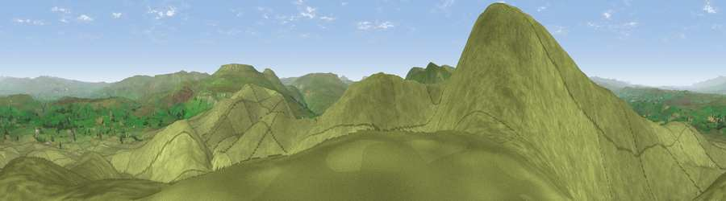

Viewpoint near Ravenstonedale
#4947 in England · top 13% of its area beats it · near RavenstonedaleThe view, rendered

A 360° render of this exact spot computed from the terrain model, tree cover and land cover — summer colours, afternoon light, calibrated against photographs of famous viewpoints. Real trees, hedges and buildings will differ in detail.
The panorama
Grey silhouette: terrain skyline in each direction (720 bearings, Earth curvature and refraction included). Dashed green: skyline with trees (+15 m) and buildings (+8 m) as obstacles. Blue strip: how far the ground is visible on each bearing.
Where the view opens
Wedge length = distance to the farthest visible ground on that bearing (vegetation-aware). Rings at 10, 25 and 50 km.
What fills the view
99% grassland ·
Angular shares of the visible panorama (visual magnitude), not map area. Landscape diversity 0.03 (0–1 Shannon).
Key numbers
More beautiful places nearby
The staircase of upgrades: each row has a higher view potential than everything closer. Driving times are estimates from straight-line distance, calibrated against real road routing — check an actual route before setting out.
| Place | Direction | Drive | Score |
|---|---|---|---|
| Green Bell | WSW · 1 km | ~2 min | 75.2 |
| Randygill Top | SW · 2 km | ~6 min | 76.0 |
| The Calf | SW · 6 km | ~12 min | 76.5 |
| Viewpoint near Sedbergh | SW · 6 km | ~13 min | 77.0 |
| Calders | SSW · 6 km | ~13 min | 79.0 |
| Calf Top | SSW · 16 km | ~29 min | 79.8 |
| Crag Hill | S · 18 km | ~31 min | 80.0 |
| Viewpoint near Bampton | WNW · 27 km | ~43 min | 80.4 |
54.40652, -2.45713 · source: screening · position refined by local search. Computed location — check access rights before visiting.